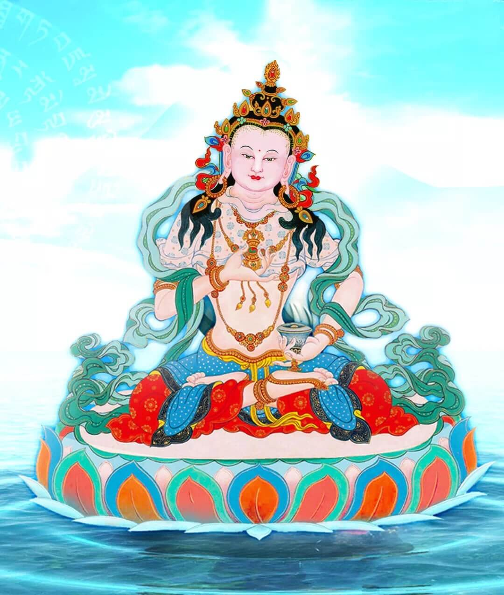

一、忏悔的必要
《地藏十轮经》中说，佛陀的教法中有两种人没有所犯的罪，一种人从来也不造恶业，称为树立佛幢者；另一种人虽然造过恶业，但以惭愧心已经发露忏悔了，这叫摧毁魔幢者，此二者均可以说是行持佛法的人，也叫做勇健得清净者。
法王如意宝再三地讲过，作为一个修行人，最好是从小就不造任何恶业，但这在末法时代非常困难。在家人于皈依之前、皈依之后，身体上杀生、邪淫、偷盗，语言上说妄语、恶语、绮语、离间语，心里面生贪心、嗔恨心、邪见，还有诽谤佛法、摧毁三宝，犯很多别解脱戒、菩萨戒、密乘戒。包括我们出家人，也是由于无始以来的烦恼习气所致，故意或无意中犯了戒律，自己想得起和想不起的罪业相当多。要成为没有造过业的第一种人，恐怕有一定的困难，所以，我们应希望变成第二种人——虽然造了罪业，但愿意在金刚萨埵面前发露忏悔。这就是忏悔的必要。
那么我们需不需要忏悔呢？肯定要忏悔。尤其在城市里的人，造业的确相当多，现在没有忏悔的话，罪业就会一直跟着自己，来世很可能堕入地狱、饿鬼、旁生，没有解脱的机会。所以大家一定要忏悔，懂得忏悔的必要性。
二、忏悔的因缘
我们即生能遇到金刚萨埵法门，这是非常殊胜的缘分。学过《百业经》、《贤愚经》的道友都知道，那里面的人造了罪业以后，尽管一生中精进忏悔，但却没有得以清净，来世还是要成熟果报，这是什么原因呢？就是因为没有遇到殊胜的对境。
而金刚萨埵的修法极为殊胜，《集密意续》中云：“三时诸佛之本体具德金刚萨埵六字心咒，何者耳闻此咒语名，证明曾于众多佛尊前行事，将来必定生于金刚萨埵佛刹，蒙诸佛加持，于大乘获得定解，具备神通，拥有胜观慧眼，必定成为佛子”。所以，大家能遇到如此清净的法门，缘分的的确确非常殊胜。
在忏悔的过程中，希望你们把金刚萨埵像放在面前，一边观想一边诵心咒。金刚萨埵心咒的力量非常大，纵然不会观想，光念诵也有很大功德。但如果能观想得非常清楚，那个功德会更大。
金刚萨埵心咒的声音，就个人而言，能清净无始以来的罪业，从整个世界来讲，对世界和平起到很大作用，众生相续中的烦恼、人与人之间的争斗、国家与国家之间的战争，都可以通过这个声音来遣除。
三、能清净业障的原因
此心咒为什么能清净业障呢？《金刚萨埵威猛三调伏续》中云：“若持诵此心咒十万遍，则破根本誓言亦得清净”。法王如意宝在解释这个教证时说：“以前念诵十万遍的话，现在是末法时代，必须要乘以四倍，即念诵四十万遍”。在密宗当中，最严重的罪是破誓言，既然这种罪业都能清净，其他罪业就更不用说了。佛经中亦云：“何人千劫中，若造严重罪，一次极力忏，诸罪得清净”。
有些人说：“我以前在家时，造的业太可怕了，杀生、打架、谤佛法、生邪见，现在有没有忏悔的机会啊”？只要有信心，一定就有这种机会。心的意念非常关键，不仅佛法中如此承认，很多心理学家和医学家也都这样认为，比如大家共同念诵吉祥偈，对万物有增上吉祥的作用。美国有个科学家，经多年的研究发现，对同样一个事物，如一朵鲜花，用恶语来谩骂它，它很快就凋谢枯萎了；若用爱语来赞叹它，它的存活时间特别长。日本也有人研究发现，对同样的水，如果竭力赞叹它，里面会有莲花状的结晶；倘若使劲诽谤它，结晶就是非常丑恶的形状。所以大家若以强烈的忏悔心来念诵，什么样的罪业都可以清净，这个应该没有问题。
还有一个原因，金刚萨埵是一尊佛陀，他在因地时曾发过宏愿：“愿我住于罪业深重者面前，若有众生持诵我的心咒而无法净除一切罪障，我决不成佛”。后来金刚萨埵的愿力已经实现了，因此他成佛现前清净刹土。
可见，金刚萨埵心咒与其他如来名号不同，虽然阿弥陀佛、释迦牟尼佛、药师佛的名号都很殊胜，但每尊佛陀的发愿有别，就像同样是大学毕业，各自的专业不同一样。消除业障最殊胜的佛陀，非金刚萨埵莫属，因此我们要祈祷金刚萨埵，原因也在这里。
总之，以有关经典的教证可了知，念诵四十万遍金刚萨埵心咒，往昔所造的罪业会得以清净；另一个原因是，金刚萨埵曾亲自承诺过，故以其发愿力定会净除罪障，就像依靠阿弥陀佛的发愿力，念其名号会往生极乐世界一样。每个人务必要记住金刚萨埵这个殊胜的誓言！
四、忏悔的方式
通过四种对治力来忏悔。《宣说四法经》云：“菩萨若具四法，则能胜伏所造所积之一切罪业。何为四法？即厌患对治力、现行对治力、返回对治力、所依对治力”。依靠金刚萨埵的加持力，再加上自己的发露忏悔，大家一定要好好念诵。倘若没有进行忏悔，人生无常，如果罪业没有清净就死了，那它始终会存于你的相续中，一旦成熟之后，永远都得不到解脱，非常可怕。如同种子被火烧掉一样，依靠这四种对治力进行忏悔，往昔的罪业会全部烧光，自相续一定会得以清净。
那怎么样忏悔呢？首先要知道自己错了，过去不管是杀生也好，犯戒也好，要深深感到十分惭愧，就像吃了毒药一样特别后悔（厌患对治力）。从此以后，哪怕遇到生命危险，也不造这样的罪业，若有了这种决心，罪业肯定会清净，假如实在做不到，也要尽心尽力地改邪归正（返回对治力）。然后依靠金刚萨埵，全心全意地忏悔（所依对治力）。忏悔时，最好把金刚萨埵像摆在前面，观想在其前诚心忏悔：“我某某时候造过什么罪业，某某时候做过什么恶事……”一个一个地发露出来，依靠金刚萨埵的加持，令所有罪业彻底清净（现行对治力）。
五、具体观想
若广说的话，比如《大圆满前行》中讲道，在自己庸俗身体的上方，观想白色的金刚萨埵，通过念诵百字明，降下甘露而清净自相续。然后金刚萨埵融入自己，自己的身体发光上供下施。最后一切外器世界收摄在内情五部金刚萨埵中，他们也依次化光融入自身，自己最终融入法界，在无缘离戏的境界中安住片刻。当又开始生起分别念时，将一切器情明观为金刚萨埵的妙用。

鉴于很多人都是初学者，所以最好是这样观想：在自己前方的虚空中，云雾缭绕或者白云飘浮，观想出一朵白莲花，莲花上有一月轮坐垫，坐垫上有金刚萨埵的单身像：身色洁白，金刚跏趺坐，手持铃杵，以十三种报身服饰严饰全身。这样的金刚萨埵闪闪发光、非常庄严。当然，在有些修法里，是将金刚萨埵观想在自己头顶上，但这个单身像修法比较简单，应该观想在前方的虚空中。我们平时念阿弥陀佛是观想在前面，而按密宗的玛哈约嘎、阿努约嘎的有些修法，需要观想在头顶上，有些《闻解脱》中无量光佛的修法也是这样。
作为初学者，应将金刚萨埵观想在前面，和颜悦色地面对着自己，以慈悲的眼神注视着自己，以智慧的眼目凝视着三千大千世界的所有可怜众生。这样观想之后，在其面前虔诚祈祷，同时念诵金刚萨埵心咒。念咒语的方式有多种，比如咒轮旋转的方式、咒轮发光的方式，还有祈祷的方式、念名号的方式。很多人可能不太懂咒轮发光、咒轮旋转，不懂这些也不要紧，只要在金刚萨埵面前，一心一意地念“嗡班匝儿萨埵吽，嗡班匝儿萨埵吽……”一边念一边观想自己所造的一切罪业在金刚萨埵面前忏悔。之后金刚萨埵发光上供下施，继而光和金刚萨埵融入自身，自己无始以来的罪业全部得以清净，最后作回向和吉祥文。
以前有些人觉得金刚萨埵的修法太复杂，一直观想不来，今天我就给你们一个简单的修法——法王如意宝的《如意宝珠》。开始时要皈依、发心，然后在前方观想金刚萨埵，金刚萨埵发光遍布十方，接着全部融入自己，所有众生也都变成金刚萨埵的形象，在这样的境界中回向。
其实这种修法很简单，对密宗的甚深修法没有打好基础的人，只观想这一点完全可以。法王如意宝在莲宝湖取出的伏藏中也说了，那个金刚萨埵仪轨与汉地众生有殊胜因缘，将利益以汉地为主的广大众生。
麦彭仁波切讲过：“胜乐金刚、喜金刚、密集金刚、时轮金刚、黑日嘎、普巴金刚童子此一切本尊实际均是金刚萨埵，十方三世诸佛归集为金刚萨埵，所有密咒明咒归摄为六字真言。”这样一来，念金刚萨埵心咒，就相当于念阿弥陀佛、释迦牟尼佛及各种本尊的心咒；持诵金刚萨埵心咒，实际上是持诵了所有的咒语。有些教言中还说，能念百字明是最好的，如果实在念不了，也可以用金刚萨埵心咒来代替。
因此，这次的机缘非常殊胜，希望大家认认真真地念诵，回去之后也要经常念。凡夫人都有须弥山那么大的罪业，没有罪业是不可能的，只有依靠金刚萨埵心咒来忏悔，大家才有解脱的希望，否则，死了以后真的非常可怕。